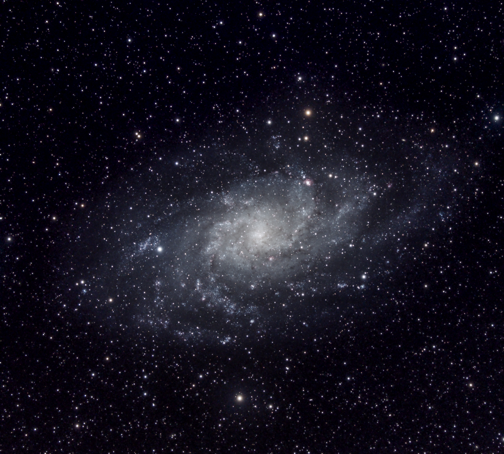

<h2>Featured</h2>
<div class="gallery">
  
  
  
  
  
  
</div>

<h3>Categories</h3>
<ul>
  <li><a href="../planetary.html">Planetary</a></li>
  <li><a href="../nebulae.html">Nebulae</a></li>
  <li><a href="../galaxies.html">Galaxies and Clusters</a></li>
  <li><a href="widefield.html">Widefield</a></li>
  <li><a href="../celestialevents.html">Celestial Events</a></li>
  
</ul>
<h3>Projects</h3>
<ul>
<li><a href="../icefire.html">Dragons of Ice and Fire</a></li>
</ul>